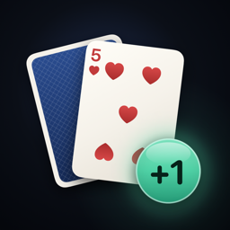

Learn the Hi-Lo count, build speed with drills, and play every hand by the chart.
Contact · FAQ · Privacy Policy
Running Count is for practice and entertainment. There's no betting and no real money in the app.
Found a bug or have a question? Email us. We usually reply within a few days.
Which counting system does the app teach?
Hi-Lo. Cards 2 to 6 count +1, 7 to 9 count 0, and tens, faces, and Aces count −1. It's the system most players learn first.
Are the decks real?
Yes. Every shoe is made of complete 52-card decks, shuffled at random. A full deck always counts back to 0.
How do I change the table rules?
Tap the gear on the Train tab. You can set the number of decks, whether the dealer hits or stands on soft 17, and late surrender. The chart and strategy drills follow these rules.
How is the true count rounded?
The app divides the running count by the decks left and rounds down. For example, +7 with 2 decks left is 3.5, so the true count is +3.
What are index plays?
A short list of plays that change when the true count is high or low. You can find it in the Charts tab.
Can I turn off the sounds?
Yes. Open Settings and turn off Sound or Haptics. Sounds also follow the silent switch.
How do I reset my progress?
Open Settings and tap Reset progress.
Can I use the app at a casino?
No. Using a device at a casino table isn't allowed. Practice at home, and play responsibly.
Last updated: September 2026
Running Count (“the App”) is provided by an independent developer (“we”). This policy explains how the App handles information.
We do not collect any personal information. The App has no accounts, no sign-in, no ads, no analytics, and no tracking, and it does not connect to the internet.
Your progress
Finished lessons, best times, and drill results are stored only on your device.
Purchase
The App is purchased through the App Store. Apple processes the payment, and we do not receive your name, email address, or payment information. Please see
Apple’s Privacy Policy for details.
We do not collect, store, or share any personal information from anyone, including children under 13.
You can clear your progress in Settings. Deleting the App removes all of its data from your device.
We may update this policy when the App changes. Updates will be posted on this page with a new “Last updated” date.
Questions about this policy? Email us at tajimaru1209@gmail.com.